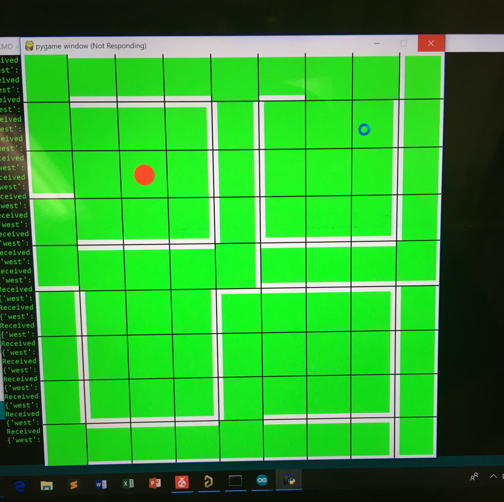
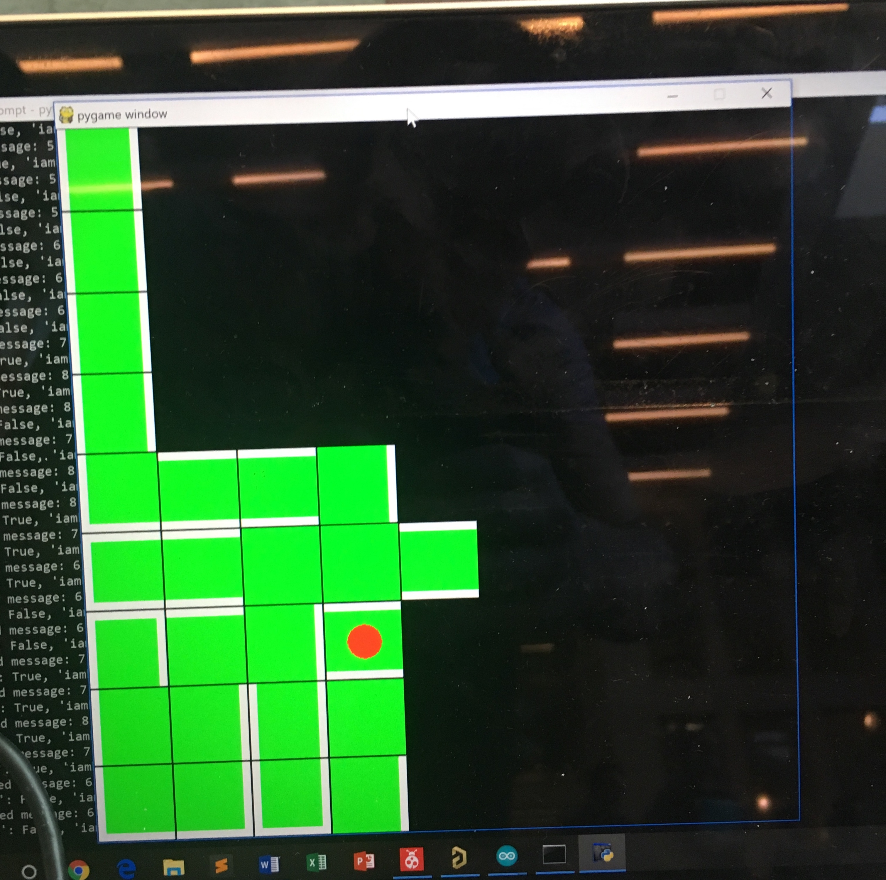

A lot of work beyond just what was expected of the labs and milestones went into our system for the final competition. Here are some of the highlights of our system design that helped make it more robust.
Though we described our filter circuit in lab 2, it is worth reiterating how robust it is. The filter circuit is a multiple feedback active filter circuit with a pass frequency centered around 660 hz. One of the advantages to our circuit’s design is that it uses an envelope detector circuit at its output to translate the magnitude of the output signal into a dc voltage that is proportional to that magnitude. This allows us to eliminate the need for using FFT or other signal processing methods, instead all that is needed on the software side is to detect when a threshold is crossed.
To make our radio more robust we built in a time-out reset feature into our code. This means whenever the radio had too many packet retransmission attempts with no success the robot would reset its radio by calling the setupRadio method again. This ensured that the robot would never lose contact with the radio.
As we neared competition we wanted to make our robot faster so we decided to install larger wheels. To ensure there was good traction we put rubber bands around the wheels to ensure the wheels wouldn’t slip and lose traction. Adding larger wheels increase our robot’s speed by a good amount and probably contributed to our robot’s success in the first round of the competition:
To speed up our work efficiency we decided to rewrite parts of the GUI that was provided to us. Instead of using html and a set of… 1,000 something pictures? We decided to use the pygame library to render the GUI using vector graphics. Since we only rewrote the front end the API requirements are identical to the TA GUI.Our GUI code can be found here, it is a fork of the original GUI repo. Having a working GUI early was beneficial because we could do testing with larger mazes and treasures earlier on in the semester.
Instead of using the provided image processing module template for our computer vision algorithms. We decided to implement them in real-time/in parallel with the down sampler. This allowed us to display outputs of our computer vision algorithms directly to the screen. This made it incredibly easy to debug and experiment around with different thresholds and filters thereby allowing us to develop a better implementation than we would of if we hadn’t had this ability.
While most teams opted to use an analog multiplexer to handle their wall sensors. We decided to use a set of 3 comparators whose threshold values were set via a potentiometer. This way we could save 3 analog input pins and use 3 digital input pins instead. Having a potentiometer to tune the sensitivity of the wall sensors proved to be very useful. Instead of having to go into the code to modify the wall sensor thresholds all we needed to do was twist the potentiometer a few times. In fact we could have used this feature during the second round of competition when our robot was incorrectly detecting walls, however, we didn’t think of it at the time. Unfortunately our robot incorrectly detecting walls led to poor performance during the second round:
To increase our robots chances of seeing another robot we put our IR robot sensor on the tip of a long plastic rod that was placed at exactly 5.5”. This way our IR sensor could detect another teams robot sooner than if the IR sensor was placed elsewhere. This means our robot could react faster in the event of another robot being detected.
This is what our robot’s budget looked like:
Line (grayscale) sensors - - - - - - - $3
IR distance sensors - - - - - - - - - $7
Camera - - - - - - - - - - - - - - - $14
Parallax servos - - - - - - - - - - - $13
Arduino Uno - - - - - - - - - - - - - $16
Mechanical Robot Parts - - - - - - - - $0
Total - - - - - - - - - - - - - - - - $53
Cooperative Robot Design (The Legendary Spoonbot):
One of our team members (Joseph) looked into the possibility of creating a cooperative maze mapping robot. Due to time constraints he was unable to finish his efforts, however this is what he managed to accomplish:
The Legendary Spoonbot is a small robot (small enough to fit in the palm of one's hand!) that has most of the capabilities of a regular 3400 robot. On board there are 3 IR obstacle sensors to avoid walls and robots, two line sensor for line following, an nrf24 radio, a microphone circuit with an LM386 amp, some LEDs + piezo, and a dual h-bridge motor driver controlling two motors. This is all controlled/used by the atmega328pb microcontroller.
One of the possible visions for this robot were to be a cooperative robot that could scout ahead of our main robot to map out the maze while the main robot could be slower and spend its time taking the most optimal route (as communicated by the spoonbot) to locate treasures within the maze. Although this wasn’t achieved, basic functionalities were successfully implemented and tested such as obstacle avoidance and line following.
Digikey BOM - - - - - - - - - - - - - $15
2 Drone Motors - - - - - - - - - - - - $5
350 mah LiPo Battery - - - - - - - - - $4
IR sensors - - - - - - - - - - - - - - $6
Line sensors - - - - - - - - - - - - - $3
Toy wheels - - - - - - - - - - - - - - $2
NRF24 - - - - - - - - - - - - - - - - $2
PCBs - - - - - - - - - - - - - - - - - $8
Total - - - - - - - - - - - - - - - - $45